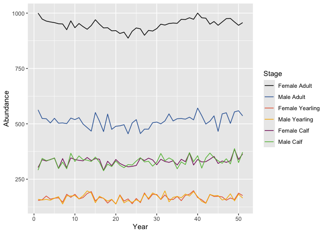
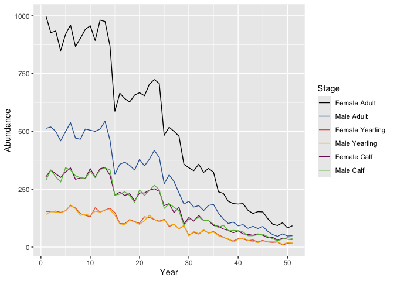

bbousims contains some general functionality for simulating population change of life stages over time from survival, ageing and birth processes.
In addition, there are more user-friendly functions for simulating Boreal Caribou population change, recruitment data from hypothetical composition surveys and survival data from hypothetical collaring.
Installation
You can install the development version of bbousims from GitHub with:
# install.packages("devtools")
devtools::install_github("poissonconsulting/bbousims")General tools for simulating populations from survival, ageing and birth
Survival and fecundity rates
bbs_survival() and bbs_fecundity() can be used to stochastically generate survival and fecundity rates over time. Survival varies by period (e.g., month, season) with options to set the intercept, year trend, annual random effect, period random effect and period within annual random effect for each stage, on the log-odds scale.
survival <- bbs_survival(intercept = logit(c(0.94, 0.98)),
trend = c(0, 0.3),
annual_sd = rep(0.05, 2),
period_sd = rep(0.1, 2),
nyear = 3,
nperiod_within_year = 4)
survival
#> , , 1
#>
#> [,1] [,2] [,3]
#> [1,] 0.9428551 0.9384019 0.9432026
#> [2,] 0.9397805 0.9351042 0.9401455
#> [3,] 0.9355031 0.9305192 0.9358923
#> [4,] 0.9487064 0.9446824 0.9490202
#>
#> , , 2
#>
#> [,1] [,2] [,3]
#> [1,] 0.9801348 0.9837630 0.9899028
#> [2,] 0.9775668 0.9816552 0.9885828
#> [3,] 0.9791850 0.9829836 0.9894149
#> [4,] 0.9796768 0.9833872 0.9896676Fecundity varies by year, with options to set the intercept, year trend and annual random effect for each stage, on the log-odds scale. Setting intercept to NA will force all rates in that stage to be 0.
fecundity <- bbs_fecundity(intercept = c(NA, logit(0.4)),
trend = c(0, -0.2),
annual_sd = c(0, 0.1),
nyear = 3)
fecundity
#> [,1] [,2]
#> [1,] 0 0.3477818
#> [2,] 0 0.3037460
#> [3,] 0 0.3347985Process matrices
Survival and fecundity rate arrays can be converted into process matrices for use in BAS population projection. In this example there are two stages representing recruit and adult.male_recruit_stage is set to NULL to indicate that there is only one recruit stage.
survival_mat <- bbs_matrix_survival_period(survival)
birth_mat <- bbs_matrix_birth_year(fecundity, female_recruit_stage = 1, male_recruit_stage = NULL)
# first period, first year
survival_mat[,,1,1]
#> [,1] [,2]
#> [1,] 0.9428551 0.0000000
#> [2,] 0.0000000 0.9801348
# first year
birth_mat[,,1]
#> [,1] [,2]
#> [1,] 1 0.1738909
#> [2,] 0 1.0000000bbs_matrix_age() is used to generate an age process matrix, which does not vary in time. The input vector denotes which stage that stage will age into (i.e., stage 1 ages to stage 2, stage 2 collects).
age_mat <- bbs_matrix_age(c(2, 2))
age_mat
#> [,1] [,2]
#> [1,] 0 0
#> [2,] 1 1Population projection
bbousims contains a custom infix operator %*b% to perform matrix multiplication with stochasticity. Instead of multiplying the population at each stage by the corresponding rate, %*b% draws from a binomial distribution, where size is the population and probability is the rate of interest.
For example, with an initial population vector and survival process matrix for the first period of the first year
pop0 <- c(25, 52)
survival_mat1 <- survival_mat[,,1,1]regular (deterministic) matrix multiplication yields
survival_mat1 %*% pop0
#> [,1]
#> [1,] 23.57138
#> [2,] 50.96701and stochastic matrix multiplication yields
survival_mat1 %*b% pop0
#> [1] 24 49bbs_population() is used to project population forward in time from survival, age and birth process matrices.
population <- bbs_population(pop0,
birth = birth_mat,
age = age_mat,
survival = survival_mat)
population
#> [,1] [,2] [,3] [,4] [,5] [,6] [,7] [,8] [,9] [,10] [,11] [,12] [,13]
#> [1,] 25 21 20 18 24 22 20 20 13 13 13 10 16
#> [2,] 52 51 48 48 65 63 61 60 79 78 77 77 87Group allocation
bbs_population_groups() is used to randomly allocate individuals at each time step into groups. Group sizes are randomly drawn from a gamma-poisson distribution with user-specified lambda and theta (dispersion parameter) values. Minimum and maximum (i.e., as a maximum proportion of the total population) groups sizes can be set. Group sizes are drawn until the cumulative size exceeds the total individuals. The remaining individuals comprise the final group. If the remaining number of individuals is < minimum group size specified by the user, these will be added to the previous group.
The output is a list of lists containing the individuals (identified by stage) in each group at each time period.
groups <- bbs_population_groups(population, group_size_lambda = 20, group_size_theta = 0)
# first time period
groups[[1]]
#> [[1]]
#> [1] 2 1 1 1 1 2 2 1 2 1 2 2 1 2 2 2 2 2
#>
#> [[2]]
#> [1] 1 2 2 2 2 2 2 1 2 2 2 2 2 2
#>
#> [[3]]
#> [1] 2 1 2 1 2 1 1 2 2 2 1 2 1 2 2 2 2 2 2
#>
#> [[4]]
#> [1] 1 1 1 1 2 2 1 1 2 2 2 2 1 1 2
#>
#> [[5]]
#> [1] 2 2 2 2 1 2 2 2 1 2 2bbs_population_groups_pairs() behaves similarly but keeps calf-cow pairs (or equivalent for different animals) together in groups whenever possible.
bbs_population_groups_survey() allocates individuals into groups once a year (month of composition survey relative to biological year start) and allows the user to set the sample coverage (i.e., the proportion of groups observed). Groups are sampled randomly.
groups <- bbs_population_groups_survey(population, group_size_lambda = 20, month_composition = 3L, group_coverage = 0.2)
# sampled groups in first time period
groups[[1]]
#> [[1]]
#> [1] 2 2 2 2 2 2 2
#>
#> [[2]]
#> [1] 2 1 2 2Boreal Caribou simulation
More user-friendly functionality exists for simulating Boreal Caribou population, where it is assumed that there are six stages: female calf, male calf, female yearling, male yearling, female adult and male adult.
Boreal Caribou population projection
The survival/fecundity rates are generated for the female stages and population is projected for those stages. Abundance at each male stage is ‘filled in’ based on provided sex ratios. The initial population vector is determined by calculating stable stage distribution. Given key parameters, bbs_demographic_summary() provides stable stage distribution, estimated lambda, estimated recruitment and calf-cow ratio.
bbs_survival_caribou() and bbs_fecundity_caribou() are used to generate rates varying over time.
bbs_population_caribou() allows the user to set the intercept, trend, annual random effect standard deviation, monthly random effect standard deviation and month within annual random effect standard deviation for female adult survival and female calf survival separately. Yearling abundance is determined from a user-specified effect on female adult survival (yearling_effect). Intercept, trend and annual random effect standard deviation can also be set for the calves per adult female (calves_per_adut_female).
In all cases, the intercept (i.e., survival_adult_female, survival_calf_female calves_per_adult_female) is the annual rate and trend/standard deviations are on the log-odds scale. Year is scaled to (Year - 1) so that the intercept represents the rate in the first year.
set.seed(1)
population <- bbs_population_caribou(nyear = 50,
survival_adult_female = 0.85,
survival_calf_female = 0.5,
calves_per_adult_female = 0.7)
bbs_plot_population(population) As an example, adding a negative trend and high standard deviation of the annual random effect in the adult female survival will cause higher variation and downward projection of population.
set.seed(1)
population <- bbs_population_caribou(nyear = 50,
survival_adult_female = 0.85,
survival_calf_female = 0.5,
calves_per_adult_female = 0.7,
survival_trend_adult_female = -0.01,
survival_annual_sd_adult_female = 0.5)
bbs_plot_population(population)
Boreal Caribou survival and recruitment data
bbs_simulate_caribou() combines bbs_population_caribou(), bbs_population_groups_survey() and bbs_survival_collared() functionality to simulate recruitment data from composition surveys and survival data from collaring. Recruitment and survival data share the same survival rates, which are generated once at the start of the bbs_simulate_caribou() function.
The recruitment and survival data are formatted to be used as input for bboutools model fitting functions.
data <- bbs_simulate_caribou(nyear = 30,
adult_females = 500,
survival_adult_female = 0.85,
survival_calf_female = 0.5,
calves_per_adult_female = 0.7,
survival_trend_calf_female = -0.01,
group_size = 15,
group_coverage = 0.3,
collared_adult_females = 30)
data$survival
#> # A tibble: 360 × 6
#> Year Month PopulationName StartTotal MortalitiesCertain MortalitiesUncertain
#> <int> <int> <chr> <dbl> <int> <int>
#> 1 1 1 A 30 0 0
#> 2 1 2 A 30 0 0
#> 3 1 3 A 30 0 0
#> 4 1 4 A 30 0 0
#> 5 1 5 A 30 0 0
#> 6 1 6 A 30 0 0
#> 7 1 7 A 30 0 0
#> 8 1 8 A 30 0 0
#> 9 1 9 A 30 0 0
#> 10 1 10 A 30 0 0
#> # ℹ 350 more rows
data$recruitment
#> # A tibble: 509 × 9
#> Year Month PopulationName Day Cows Bulls Yearlings Calves UnknownAdults
#> <int> <int> <chr> <dbl> <int> <int> <int> <int> <int>
#> 1 1 9 A 1 5 4 3 1 0
#> 2 1 9 A 1 4 4 2 2 0
#> 3 1 9 A 1 6 2 5 5 0
#> 4 1 9 A 1 7 1 5 5 0
#> 5 1 9 A 1 10 4 1 1 0
#> 6 1 9 A 1 3 4 1 6 0
#> 7 1 9 A 1 11 9 0 5 0
#> 8 1 9 A 1 5 2 3 3 0
#> 9 1 9 A 1 7 3 2 3 0
#> 10 1 9 A 1 4 2 2 4 0
#> # ℹ 499 more rows